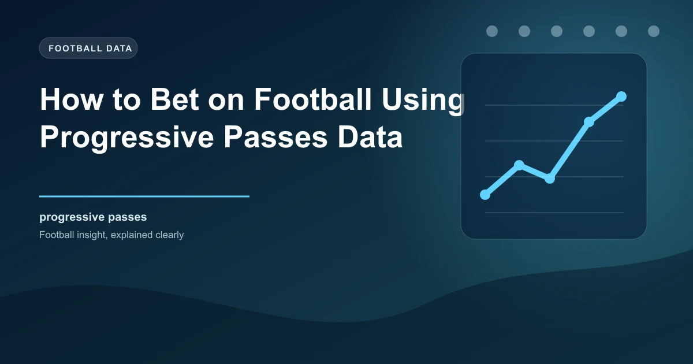

Football analytics has evolved dramatically over the past decade, and one of the most powerful statistical tools available to bettors today is the progressive pass metric. While traditional statistics like possession percentage and total passes tell you how much of the ball a team has, progressive passes reveal what a team actually does with it. This distinction is crucial for betting because it separates teams that dominate possession meaningfully from those that simply pass the ball sideways and backwards without threatening the opposition goal.
A progressive pass is defined as a completed pass that moves the ball significantly closer to the opponent's goal. The exact threshold varies slightly between data providers, but the most widely accepted definition, used by FBref and StatsBomb, classifies a pass as progressive if it moves the ball at least 10 yards closer to the opponent's goal from its starting point, or if it is a pass into the penalty area. This definition captures the passes that genuinely advance a team's attacking position rather than the lateral and backward passes that pad possession statistics without creating danger.
Progressive passes are distinct from key passes and assists, though they are related. A key pass is the final pass before a shot, and an assist is a key pass that directly leads to a goal. Progressive passes occur earlier in the attacking sequence, often originating from the defensive or middle third of the pitch. They represent the engine of ball movement that feeds the final third, creating the platform from which shots, crosses, and through balls can be delivered.
Progressive passes data is publicly available from several reliable sources. FBref, which is powered by StatsBomb data, provides progressive passes and progressive carries for every player and team across major leagues. Understat offers similar metrics with a focus on the top five European leagues. For bettors who want real-time or match-level data, platforms like WhoScored and SofaScore incorporate progressive passing into their player ratings and match statistics.
When reading progressive passes data, the key figure to focus on is progressive passes per 90 minutes, rather than raw totals. A team that plays more matches will naturally accumulate more raw totals, and a team that dominates possession in easy matches will inflate their numbers. The per 90 figure normalises for these variables and gives you a fairer picture of a team's genuine ball progression quality.
Another valuable metric is the ratio of progressive passes to total passes. A team might complete 600 passes in a match, but if only 40 of those are progressive, the vast majority of their passing is non-threatening. A team that completes 400 passes with 60 progressive passes is actually progressing the ball more effectively despite having less overall possession. This ratio is one of the most revealing indicators of whether a team's possession is purposeful or pedestrian.
Individual player data is equally important. Midfielders and centre-backs who consistently record high progressive pass numbers are the players who drive a team's attacking rhythm. When these players are absent through injury or suspension, the team's ability to progress the ball often drops significantly, which can have measurable effects on their match outcomes and goal-scoring probability.
The correlation between progressive passes and attacking quality is strong and well-documented. Teams that rank highly in progressive passes per 90 tend to create more chances, generate higher expected goals, and score more actual goals. This makes intuitive sense: the more frequently a team moves the ball into dangerous areas, the more opportunities they create for shots and scoring chances.
In the Premier League, the teams that consistently rank in the top five for progressive passes per 90 are typically Manchester City, Arsenal, Liverpool, and Chelsea. These are clubs that invest heavily in technically gifted midfielders and build their tactical systems around controlled, purposeful ball movement. At the other end of the table, teams that rely on direct play, long balls, or defensive structures tend to rank much lower in progressive passes but can still achieve respectable results through other means.
The relationship between progressive passes and goals is not perfectly linear, however. Some teams produce high progressive pass numbers but struggle to convert those advances into goals because they lack the final-third quality to finish moves. Others are efficient at converting fewer progressive passes into goals because they have elite finishers or effective set-piece routines. This gap between progression and conversion is where betting value can be found, because the market sometimes overvalues or undervalues teams based on their progression numbers alone.
Statistical analysis across multiple seasons shows that teams in the top quartile for progressive passes per 90 win approximately 55 to 60 percent of their matches, compared to roughly 35 to 40 percent for teams in the bottom quartile. This is a significant edge, and it holds true across different leagues and playing styles.
For the over/under goals market, progressive passes are particularly revealing. Matches between two teams that both rank highly in progressive passes tend to produce more goals because both sides are capable of creating chances through open play. Conversely, matches between two teams that rank poorly in progressive passes often produce fewer goals, as neither side can consistently build attacks and the match becomes more reliant on set pieces, individual errors, or moments of magic.
The correlation with BTTS is also noteworthy. Teams with high progressive pass numbers create enough chances to score in most matches, but if their defensive structure is weak, they can concede as well. This combination of attacking capability and defensive vulnerability is the sweet spot for BTTS Yes betting. By identifying teams that rank highly in progressive passes but also concede frequently, you can find BTTS opportunities at favourable odds.
Consider a mid-table team that averages 55 progressive passes per 90, ranking 8th in the league. They face a bottom-five side that averages 30 progressive passes per 90 and concedes an average of 1.7 goals per match. The progressive pass differential suggests the mid-table team will dominate territorial position and create significantly more chances. If the bottom side also concedes frequently, the Over 2.5 and BTTS markets both become attractive. If the bottom side is defensively solid despite their low progression numbers, the match may produce fewer goals than the quality differential suggests, creating value on Under 2.5.
There are several ways to translate progressive passes data into actionable betting decisions. The key is using the data to identify mismatches that the market has not fully priced in.
When a team with elite progressive passing faces a deep-defending opponent, the match dynamic often involves sustained territorial pressure. If the defending team has a low progressive pass count and sits deep, they will struggle to relieve that pressure. This creates value on Over 2.5 goals and on the dominant team winning by multiple goals, because the territorial advantage translates into a high volume of scoring chances over time.
Teams with strong progressive pass numbers that are underperforming their expected results are often undervalued by the market. If a team is creating chances through progressive ball movement but experiencing a run of bad luck in front of goal, their underlying quality suggests they will regress toward their expected performance level. This creates value on betting against them while their odds are artificially short, or backing them when the market undervalues their true quality.
When a key progressive passer is ruled out, the team's ball progression often suffers dramatically. If a team's primary progressive passer averages 8 progressive passes per 90 and is absent, the team may drop to 35 or 40 progressive passes per 90 as a unit. This reduction in ball movement correlates with fewer chances created and a higher probability of dropping points. Betting against teams missing their primary progressive passer, especially in away fixtures, can be a profitable strategy.
The teams that consistently lead progressive pass rankings are those with technically elite midfielders and tactical systems designed for controlled build-up play. Manchester City under Pep Guardiola have been the benchmark for progressive passing in the Premier League for several seasons, with players like Rodri, Kevin De Bernardo Silva, and Bernardo Silva consistently ranking among the league's top progressive passers. Arsenal's rise under Mikel Arteta has been built on a similar foundation, with Martin Odegaard and Declan Rice driving progressive ball movement from central areas.
In La Liga, Barcelona and Real Madrid dominate the progressive pass rankings, though their styles differ. Barcelona under their current system emphasise high-volume progression through central midfield, while Real Madrid often rely on Vinicius Junior and Jude Bellingham to carry the ball forward, which shows up more in progressive carries than progressive passes. In the Bundesliga, Bayern Munich and Bayer Leverkusen lead the way, with Leverkusen's system under Xabi Alonso producing particularly high progressive pass numbers from the centre-back positions.
For bettors, the practical takeaway is that these teams' matches often feature higher goal expectation than casual observers might predict, because their sustained ball progression creates a high volume of scoring chances even against organised defences. Conversely, teams at the bottom of progressive pass rankings can still be effective through counter-attacking, set pieces, or defensive organisation, so the data must be interpreted in context rather than applied mechanically.
While progressive passes are a powerful analytical tool, they have important limitations that bettors must understand. The metric favours teams that play possession-based football and can undervalue teams that achieve results through other means. Direct, counter-attacking teams may rank poorly in progressive passes but still score goals effectively through fast transitions that do not involve a high volume of progressive passes in the statistical sense.
Context also matters enormously. Progressive passes in a match where a team is already 3-0 up and controlling the game are less meaningful than progressive passes in a tight, competitive match. The scoreline, the tactical setup of both teams, and the match situation all influence progressive pass numbers in ways that a raw figure cannot capture. Additionally, different data providers use slightly different definitions of what constitutes a progressive pass, so comparing numbers across platforms requires caution.
Finally, progressive passes data is a measure of process, not outcome. A team can produce excellent progressive passing numbers and still lose a match because of a goalkeeper error, a missed penalty, or a red card. Over a large sample, the process and outcome tend to align, but in any individual match, variance plays a significant role. Use progressive passes as one input in a broader analytical framework, not as a standalone prediction tool.
WinFulltime combines progressive passes data with dozens of other metrics to deliver comprehensive match analysis. Make data-driven betting decisions today.
Build Your Ticket Win
Win